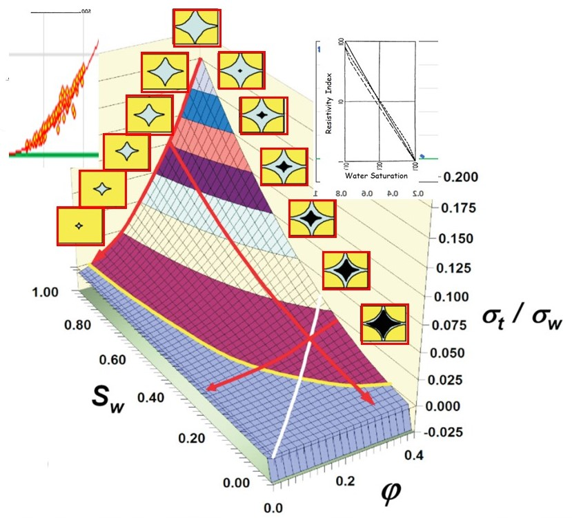

|

|
You may not know that in spite of several claims to the contrary, the Archie model had eluded
attempts to derive it from more fundatmental first principles. It appears that the thought never
occured to anyone to try. Well, no one was doing "theoretical petrophysics". Still, you would have thought . . .
Parita Sen, then at the Schlumberger-Doll Lab published a claim of deriving Archie's law from
a first principle in 1982, the the "first principle" was in fact the Hani-Bruggeman "effective medium" model, hardly a
first principle, and the porosity exponent thus derived was 3/2 exactly rather than the Archie
approximate 4/2. So, it's the 1980s and no one is succeeding.
That is ... until the early 1990s when Dr. David Herrick, having worked long and hard to understand
the resistivity interpretation paradigm in use up to that time, decided it simply could not be
understood on the basis of Ohm's law and arm-waving. He finished his thinking while a researcher
at Mobil's Dallas Research Laboratory and published his findings in 1993 and 1994 with his coauthor, me.
The basis of Herrick's theory was to state a set of three physically obvious and eminently reasonable "first principles".
These are: The bulk conductivity of a class of rocks of interest is proportional to: (1) the conductivity of the brine
in the rock; (2) the amount of brine in the rock; (3) the geometrical configuration (i.e., brine geometry) of the brine
in the rock. The restriction of "a class of rocks" refers to rocks whose conductivity depends upon the
brine (and only the brine) in the rock. There are other restrictions such as the rocks should have primary
porosity only and no fractures. The class of rocks corresponds to rocks where Archie's model works
well and are therefore called "Archie Rocks". The new model was first dubbed the "Electrical Efficiency
Theory" and later the name shifted to the "Geometrical Factor Theory". The Archie model is a special case of the GFT.
I always had a nagging suspicion that the model had not been fully developed, and introduced percolation
threshold concepts into a similar model (PPTT) in 2007. The Archie model was also a special case of this theory; however,
the GFT and PPTT models were not the same; I suspected one of them must therefore be in error.
Finally, by fully generalizing the GFT, I was able to show that the original GFT and PPTT are both
special cases of a more general model, a generalized geometrical factor model (GGFT). It turns out that
GGFT is able to accomodate the "classical" shaly-sand models (Waxman-Smits & Dual Water) as special
cases.
However, one thing that remained constant throughout the development is Herrick's three first principles.
If you absorb this video, I guarantee your insight into how rocks conduct electricity, and understanding
of the various saturation models, is going to improve over what it was when you got your popcorn
and sat down to watch.
About 1 hour, 45 minutes.
Generalizing the Geometrical Factor Theory
|